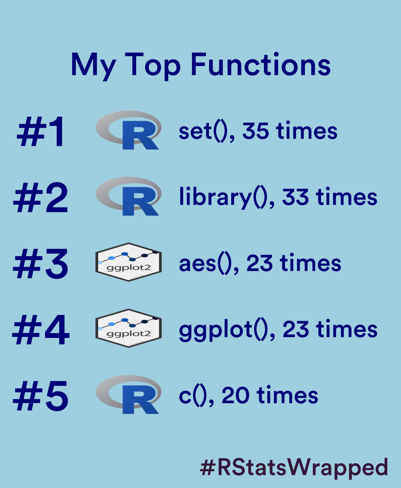

show the code
library(NCmisc)
library(janitor)
library(tidyverse)
library(patchwork)
library(showtext)
library(ggtextures)
library(png)
library(cowplot)Alex Reed
December 31, 2022
Special thanks to Nicole Rennie for the inspiration for this blog post.1
You can use the knitr::purl function to convert .Rmd files into .R scripts. If you prefer using .R scripts, this step is not necessary. To convert multiple files at once, you can create a function using the code below. Alternatively, if you prefer to convert the files manually, you can simply insert the filename for each .Rmd file one at a time.
Choose the directory where your converted .R scripts are located. Use the list.files function to create a character vector called all_files that contains the names of all files in the directory specified by file_path that have an “.R” or “.r” file extension.
First, add a font similar to the Spotify font. The font used by Spotify is Spotify Circular.
Use ggplot2 to create the top function graphic.
top_functions <- ggplot() +
# add text with the numbers 1 to 5
geom_text(data = data.frame(),
mapping = aes(x = rep(1, 5),
y = 1:5,
label = paste0("#", 1:5)),
colour = "#00008b",
size = 20,
fontface = "bold",
family = "Circular") +
# add text with the names of the functions, and the number of times its used
geom_text(data = func_data,
mapping = aes(x = rep(2.25, 5),
y = 1:5,
label = paste0(func, "(), ", n, " times")),
colour = "#00008b",
hjust = 0,
size = 11,
fontface = "bold",
family = "Circular") +
# add images for each package
geom_textured_rect(data = hex_imgs,
aes(xmin = rep(1.5, 5), xmax = rep(2.1, 5),
ymax = 1:5-0.3, ymin = 1:5+0.3, image = img),
lty = "blank",
fill="transparent",
nrow = 1,
ncol = 1,
img_width = unit(1, "null"),
img_height = unit(1, "null"),
position = "identity") +
# add title using geom_text() instead of labs()
geom_text(data = data.frame(),
aes(x = 2.45, y = 0, label = "My Top Functions"),
colour = "#00008b",
fontface = "bold",
hjust = 0.5,
size = 14,
family = "Circular") +
# set axis limits and reverse y axis
scale_x_continuous(limits = c(0.9, 4)) +
scale_y_reverse(limits = c(5.5, -0.2)) +
# add a caption
labs(caption = "#RStatsWrapped") +
# set the theme
theme_void() +
theme(plot.background = element_rect(fill = "#ADD8E6", colour = "#ADD8E6"),
panel.background = element_rect(fill = "#ADD8E6", colour = "#ADD8E6"),
plot.margin = margin(40, 15, 10, 15),
plot.caption = element_text(colour = "#46214a",
margin = margin(t = 15),
face = "bold",
hjust = 1,
size = 30,
family = "Circular"))
top_functions
Add a geometry shape to the background
Using the patchwork package, you can overlay the geometry shape and the function graphic to create a single plot.
updated <- top_functions + inset_element(inset1, left = -1, right = 1.2, bottom = 0, top = 2.2, align_to = "full") &
theme(plot.background = element_rect(fill = "#ADD8E6", colour = "#ADD8E6"),
panel.background = element_rect(fill = "#ADD8E6", colour = "#ADD8E6"),
plot.margin = margin(40, 7, 5, 7),
plot.caption = element_text(colour = "#46214a",
margin = margin(t = 5),
face = "bold",
hjust = 1,
size = 30))I then created an album cover in Canva. The photo is from a Justin Timberlake concert I attended in Las Vegas, Nevada.
Now, combine the graphic and album cover to complete the #RStatsWrapped graphic.
Nicola Rennie. December 3, 2022. nrennie.rbind.io/blog/2022-12-03-how-to-make-your-own-rstats-wrapped↩︎
@online{reed2022,
author = {Alex Reed},
title = {R {Stats} {Wrapped}},
date = {2022-12-31},
url = {https://reedalexandria.github.io/2022-12-31-rwrapped},
langid = {en}
}